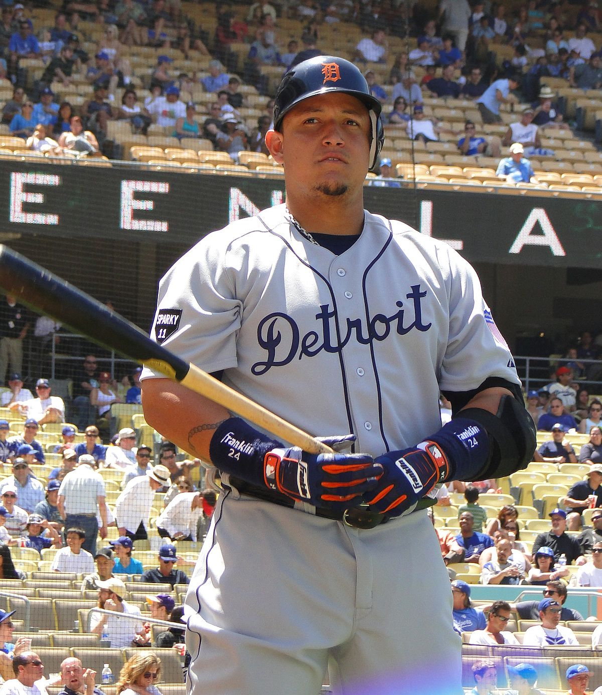

Currículum Vitae

Miguel Cabrera
Resumen
José Miguel Cabrera Torres, (Maracay, Venezuela, 18 de abril de 1983), más
conocido como Miguel Cabrera, es un beisbolista profesional venezolano que
juega en las Grandes Ligas de Béisbol con el equipo de los Tigres de
Detroit. Desde su debut en 2003, en dos ocasiones fue ganador del premio
al MVP de las Grandes Liga de Béisbol de la Liga Americana, cuatro veces
campeón de bateo de la Liga Americana y once veces al campeonato de la
MLB. Cabrera ha jugado en la primera y tercera base durante la mayor parte
de su carrera en las Grandes Ligas, pero jugó principalmente en el jardín
izquierdo y derecho antes de 2006. En 2012, ganó la Triple Corona en las
Grandes Ligas de Béisbol.1
Datos Personales
- Nombre: Jose Miguel Cabrera Torres
- Lugar de Nacimiento: Maracay, Venezuela
- Fecha Nacimiento: 18 Abril de 1983
Carrera Profesional
-
2004 En 2004, Cabrera bateó (.294) con 33 jonrones, 112 carreras
impulsadas, 101 carreras, 177 hits, un porcentaje de embase de (.366)
-
2005 En 2005, Cabrera terminó segundo en la Liga Nacional en hits de
base con 198 y bateó para (.323) con 33 jonrones, 43 dobles, dos triples
y 116 carreras impulsadas.
-
2006 Antes de la temporada 2006, Cabrera representó a Venezuela en el
Clásico Mundial de Béisbol inaugural; la selección venezolana terminó
séptima en el torneo.
-
2007 El 17 de febrero, Cabrera se convirtió en el primer jugador de la
temporada baja de 2007 en ganar su audiencia de arbitraje, obteniendo un
contrato de un año por valor de ($ 7.4) millones
Logros
- + de 1,800 carreras impulsadas
- 20 temporadas en Grandes Ligas
- Promedio de bateo de .310 de por vida
- El único ganador de la Triple Corona en medio siglo
- WAR de 68.8